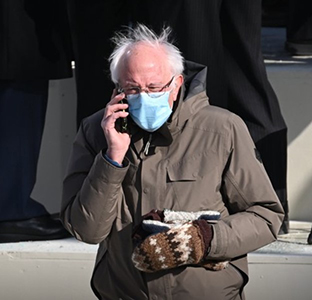
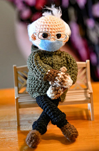

AP - About those wooly mittens that U.S. Sen. Bernie Sanders wore to the presidential inauguration, sparking endless quirky memes across social media? They've helped to raise $1.8 million in the last five days for charitable organizations in Sanders' home state of Vermont, the independent senator announced Wednesday.
The sum comes from the sale of merchandise with the Jan. 20 image of him sitting with his arms and legs crossed, clad in his brown parka and recycled wool mittens.
Sanders put the first of the so-called "Chairman Sanders" merchandise, including T-shirts, sweatshirts and stickers, on his campaign website Thursday night and the first run sold out in less than 30 minutes, he said. More merchandise was added over the weekend and sold out by Monday morning, he said.
"Jane and I were amazed by all the creativity shown by so many people over the last week, and we’re glad we can use my internet fame to help Vermonters in need," Sanders said in a written statement. "But even this amount of money is no substitute for action by Congress, and I will be doing everything I can in Washington to make sure working people in Vermont and across the country get the relief they need in the middle of the worst crisis we've faced since the Great Depression."
OTHER TOP STORIES:
- Cable trouble dogs spacewalkers in European lab upgrades AP
- Different types of gambling, media converging for growth AP
- AP PHOTOS: Designer Julien Fournie's showcase is a movie AP
Sanders' mittens were made by Jen Ellis, a Vermont elementary school teacher who has a side business making mittens out of recycled wool. His inauguration look, also featuring the winter jacket made by Burton Snowboards, sparked countless memes from the photo taken by Agence France-Presse: The former presidential candidate could be found on social media timelines taking a seat on the subway, the moon and the couch with the cast of "Friends," among other creative locales.
Ellis said on social media over the weekend that Sanders called to tell her that "the mitten frenzy" had raised an enormous amount of money for Vermont charities although she was not authorized to disclose the amount, yet.
"But it's BIG and it's amazing! Thank you!! Generosity brings joy," she tweeted.
She also said she made three more pairs of mittens and donated them for fundraising to Passion 4 Paws Vermont, Outright Vermont, and would be auctioning off a pair on eBay for her daughter's college fund.
The groups that will benefit from the proceeds of the "Chairman Sanders" items include Area Agencies on Aging to fund Meals on Wheels throughout Vermont, Vermont community action agencies, Feeding Chittenden, Chill Foundation, senior centers in Vermont and Bi-State Primary Care for dental care improvements in the state, Sanders' office said.
Sander' attire has also sparked other charitable endeavors. A crocheted doll of Sanders in his garb was auctioned off online and Burton Snowboards donated 50 jackets to the Burlington Department for Children and Families in Sanders' name, his office said.
Getty Images confirmed that it will donate its proceeds as part of the licensing agreement to put the photo on the merchandise to Meals on Wheels of America.